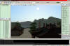 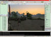 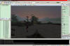

－ DSP LPF Viewer Demo v1.0 （源代码，TC2.0编译）
该程序演示了低通滤波器的核函数。
－ DSP Fuctions Viewer Demo v1.0 （源代码，TC2.0编译）
该程序演示了数字信号处理所用到的各种函数，你可以在其中加入你想演示的任何函数。
彭 韬
硕士，工程师
2001年获电子科技大学计算机通信本科学士学位，毕业后就职于四川国腾通信集团、国腾信息股份有限公司（现国腾科技），从事通信软件、信息系统开发工作。
2002年进入电子科技大学通信学院攻读计算机通信硕士研究生，研究方向为“多媒体通信与网络综合服务”，从事流序列图像处理（图像压缩、分割、识别、跟踪）研究。
2004年2月进入微软亚洲研究院（MSRA）
网络图形（IG）组担任访问学者，进行3D图形图像及游戏技术研究，参与了多个与MS Game
Studio（MGS）合作的图形技术、游戏技术研发。进行3D图形渲染与特效方面的研究，在GPU高动态（HDR）实时光照模拟方向发表了论文《在可编程图形硬件上实现图像高动态范围压缩》。
研究工作结束后，在2005年获电子科技大学计算机通信专业硕士学位，于当年3月进入金山软件股份有限公司进行图形游戏项目组织和研发工作。先后在珠海西山居工作室、成都亚丁工作室作为研究员组织设计、研发适用于MMO的3D图形引擎、同时参与多款游戏项目的图形图像优化、服务器体系研发和组织工作。
2006年4月进入广州网易互动娱乐有限公司，在成都工作室任游戏客户端主程，负责3D图形引擎研发、MMO服务器/客户端逻辑并组织各种编辑器开发工作。
2009年11月，参与发起并组建了成都网成科技有限公司，至2010年8月兼任该公司程序部门经理，创建并组织开发了适用于大型3D网络游戏的图像引擎，客户端及服务器开发套件。
2010年8月，加入成都恒图科技有限公司，负责本公司软件开发程序架构及技术研究，团队协作和管理工作。
Email:
xiaopplus@gmail.com
Blogs:
http://xiaopplus.blog.163.com
Research
Tao system：
Tao系统定位在一个基于互联网的多人在线游戏系统（MMO）上。正如它的名字所表示的（英文是“道”的意思），它的主旨是尽量构造和演绎大自然的环境和行为，从宏大的宇宙尺度到地面上的一棵草、一块石头，它尽可能通过“过程生成”、“仿生”、“分布式计算”、“数据库”等技术进行虚拟和模拟。接入系统的人（角色）与人之间或者和环境之间的交互有多种模式、空间尺度和视角。另外，Tao系统中的世界将像真实世界一样进行演化，你在不同时间地点接入将看到全新的世界。
－ Tao Project Prototype，2008年开始的原型项目
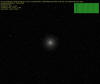 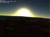 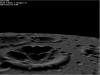 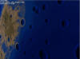 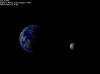 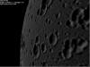
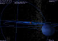
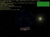
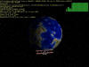
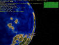
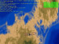
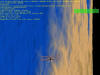
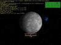
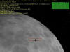
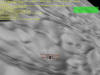
－ Tao AI System，2008年开始的AI原型项目
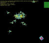
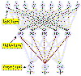
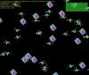
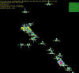
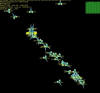
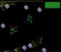
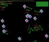
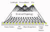
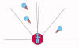
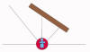
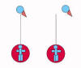
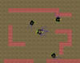
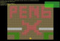
－ CH Prototype：2004年开始的CH
多人在线系统预研发
－ CH Investigation，2001年开始的早期调研项目
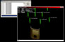
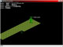
Supra Engine：3D研发系统，MSRA项目
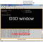
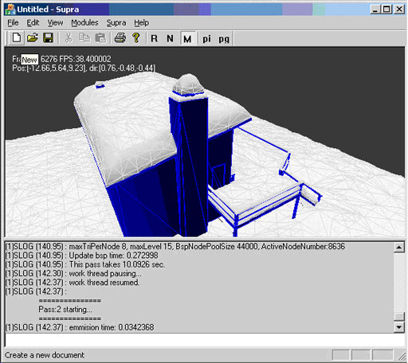
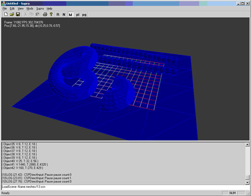
模型细分（SubDivision）：3D游戏类图形研究工作
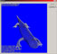
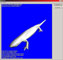
Projects
Professional Activities
Publications